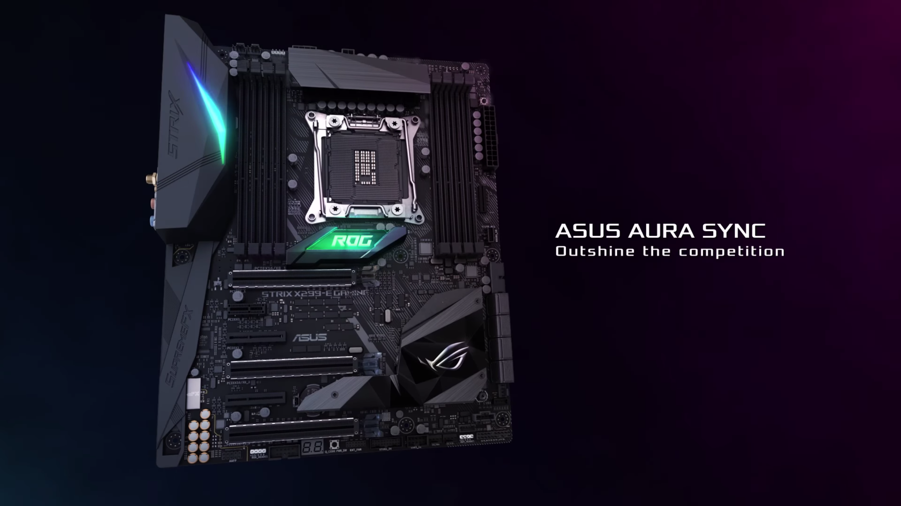

Bienvenido a PcMagic
Tu página de confianza para conocer los componentes del ordenador
Video MP4:
Video OGG:
El archivo OGG no es detectado como video
Video WEBM:
VIDEO IFRAME
Audio MP3:
Audio OGG:
Componentes
- Placa Base
- Procesador
- Memoria RAM
- Disco Duro
- Tarjeta Gráfica
- Fuente de Alimentación
Placa Base
La placa base, que es el componente principal que conecta todos los demás componentes del ordenador.
Procesador
El procesador, que es el componente encargado de realizar cálculos y ejecutar instrucciones.
Memoria RAM
La memoria RAM, que es un tipo de memoria que se utiliza para almacenar datos temporalmente mientras el ordenador está en uso.
Disco duro
El disco duro, que es un dispositivo de almacenamiento de datos que se utiliza para almacenar todos los archivos y programas del ordenador.
Tarjeta gráfica
La tarjeta gráfica, que se encarga de procesar y mostrar imágenes en la pantalla del ordenador.
Fuente Alimentación
La fuente de alimentación, que suministra energía a todos los componentes del ordenador.


Esta obra está bajo una Licencia Creative Commons Atribución-NoComercial 4.0 Internacional.